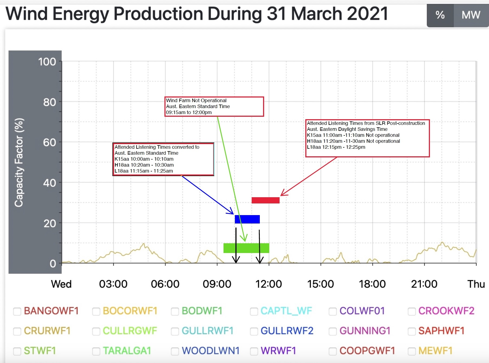

Understanding the Technical Evidence
Principal planning, acoustical and regulatory documents forming the technical foundation of the Lal Lal Wind Farm administrative record.
Contemporary public explanation of the technical methodology
Following completion of the Stage One post-construction noise assessment, SLR Consulting conducted a publicly available online information session explaining the methodology adopted for the assessment and the technical framework governing operational noise compliance.
Watch the public information session
The presentation discusses the Planning Permit framework, the NCTP, NZS 6808:2010, pre-construction baseline and post-construction monitoring methodology, attended listening observations, extraneous environmental noise, special audible characteristic assessment and environmental auditor verification.
Transcript notice
The accompanying transcript was downloaded from the publicly available YouTube recording. It has not been edited or corrected by the Trustee and may contain automated transcription errors, including inaccuracies in punctuation, technical terminology, names or acronyms.
It is provided solely as a reader aid. Where any discrepancy exists, the video recording should be regarded as the authoritative source.
Operational Timeline — 31 March 2021
This figure is published beneath the public information session and transcript because it relates to the Q&A discussion concerning the Stage 1 Elaine attended observations, daylight saving time and whether the wind turbines were operating during the recorded observation periods.
Operational Timeline — 31 March 2021
Document type: Historical reconstruction / analytical exhibit
Prepared by: Beneficiary
Document provenance: Historical documentary record assembled by the Beneficiary prior to establishment of the Trustee's continuing administrative record.
Administrative significance
The figure was prepared as a historical reconstruction using publicly available AEMO generation data, the attended observation times recorded in Appendix D of the Stage 1 Elaine Post-construction Noise Assessment, and contemporaneous documentary material then available.
Appendix D records attended observations at K15aa, H18aa and L18aa on 31 March 2021. During the public SLR information session, the Q&A discussion addressed the timing of those observations, daylight saving time and whether wind turbines were operating during the relevant periods.
Following execution of the Owen Robert Inter Vivos Trust, the Trustee has incorporated the figure into the continuing administrative record as historical reference material. It is published to assist readers in understanding the chronology of the attended observations discussed during the public SLR information session.

Primary Technical Source Documents
These documents are presented chronologically to illustrate the development of the published technical record concerning background noise monitoring, compliance assessment and subsequent technical review. Each document is published as a primary source and is accompanied by limited contextual information describing its role within the administrative record.
Technical Framework
The Planning Permit, Noise Compliance Testing Plan and NZS 6808:2010 established the framework for background noise monitoring, compliance assessment, post-construction verification and reference receptor methodology.
Original Background Monitoring
The Marshall Day report records the original background monitoring and the K15aa monitoring difficulties that led to supplementary baseline monitoring.
Supplementary Baseline Monitoring
The SLR baseline report records the 2019 supplementary monitoring, the adopted K15aa monitoring location, hub-height wind data and baseline regression analysis.
Technical Correspondence
SLR later stated that pre-construction baseline noise monitoring was completed at K15aa in approximately October 2018 and explained the relationship between K15aa and J14aa.
Auditor Correspondence
ARUP correspondence forms part of the documented technical history, including discussion of representative monitoring locations and mandatory “shall” language under NZS 6808:2010.
Subsequent Technical Review
Appendix H records later re-analysis of the K15aa baseline after identifying that aspects of early wind farm commissioning had occurred during part of the 2019 supplementary monitoring period.
Marshall Day Acoustics Background Noise Monitoring Report
The original background monitoring report is published as a primary technical source because it records the first K15aa monitoring history and explains why later supplementary monitoring was undertaken.
Background Noise Monitoring Report
Date: 1 March 2018
Originating organisation: Marshall Day Acoustics
Document provenance: Primary technical report prepared for Lal Lal Wind Farms Pty Ltd as part of the pre-construction background noise assessment required under the Planning Permit.
Administrative significance
The report records that background noise survey and analysis was conducted in accordance with the Planning Permit and NZS 6808:2010. It records that K15aa was monitored during two separate surveys and that the data was affected by local extraneous noise.
The report further records that, for the second K15aa survey, the monitor was relocated to the only alternative position for placing the monitor in accordance with NZS 6808:2010, at a location representative of the noise environment around the dwelling.
Despite that relocation, the report concludes that the K15aa data was not suitable for deriving operational noise limits or assessing post-construction compliance.
Primary technical statement
“For the second survey, the noise monitor was relocated towards the front (eastern side) of the dwelling further away from the domestic air-conditioning system which was identified as the likely source of extraneous noise during the first survey. This location was identified as the only alternative position for placing the noise monitor in accordance with NZS 6808:2010, at a location representative of the noise environment around the dwelling.”
Why this document forms part of the administrative record
This report establishes the original K15aa background noise monitoring record and explains why the subsequent supplementary baseline monitoring became significant within the Trustee's administrative and evidentiary record.
SLR Supplementary Baseline Noise Monitoring Report
This report is published as a primary technical source because it records the supplementary K15aa baseline monitoring later relied upon throughout the administrative record.
Lal Lal Wind Farm Compliance — Baseline Noise Monitoring
Date: 16 February 2021
Originating organisation: SLR Consulting Australia Pty Ltd
Document provenance: Primary technical report later obtained through EPA Freedom of Information and repeatedly relied upon throughout the Trustee's administrative record.
Administrative significance
The report documents supplementary baseline monitoring undertaken during 2019 following the earlier Marshall Day monitoring. It records that the supplementary monitoring was undertaken to obtain valid baseline noise levels prior to the wind farm's operation and to determine operational noise limits.
The report states that the 2019 baseline monitoring campaigns at K15aa were conducted in accordance with the Planning Permit and NZS 6808:2010, as referenced in the Planning Permit. It also records Figure 2 showing the 2019 monitoring location and the two previous 2017 monitoring locations.
The report records that Batch 1 monitoring occurred between 31 July 2019 and 26 August 2019 without hub-height wind speed data, and that Batch 2 monitoring occurred between 22 October 2019 and 14 November 2019 using hub-height wind speed from the nearest energised WTG nacelle. The report states that no WTGs were operating during the Batch 2 period because it was prior to operational commissioning.
Primary technical statements
“This supplementary noise survey was conducted by SLR Consulting in 2019 to obtain valid baseline noise levels prior to the windfarm's operation and determine appropriate operational noise limits in accordance with the planning permit for the Lal Lal Wind Farm.”
“Baseline noise monitoring campaigns in 2019 have been conducted at receiver K15aa in accordance with the following: the planning permit for the Lal Lal Wind Farm; New Zealand Standard 6808:2010 Acoustics – Wind farm noise (NZS 6808:2010), as referenced in the planning permit.”
Why this document forms part of the administrative record
This report establishes the supplementary baseline methodology, monitoring location and background noise limits subsequently relied upon throughout the published technical record.
SLR Technical Response Letter
This correspondence is published as part of the primary technical source record because it records SLR's own explanation of the relationship between pre-construction assessment, the K15aa reference receptor, interim monitoring during early operation and the Stage 1 compliance assessment.
Elaine Wind Farm — Noise Compliance
Date: 1 December 2022
Originating organisation: SLR Consulting Australia Pty Ltd
Document provenance: Technical correspondence prepared by SLR Consulting concerning pre-construction assessment, operational monitoring and compliance assessment for the Lal Lal Wind Farm.
Administrative significance
The correspondence forms part of the published technical record because it explains the relationship between the pre-construction background noise assessment, the reference receptor adopted for compliance assessment, interim operational monitoring and the subsequent Stage 1 compliance assessment.
The correspondence records that:
- pre-construction baseline noise monitoring was completed by SLR at location K15aa in approximately October 2018 and the relevant noise limits were determined;
- the Pre-Construction Noise Assessment predictions of wind farm noise formed part of the assessment chronology;
- K15aa was repeatedly identified as the relevant reference receptor for J14aa, with the correspondence referring to their geographic proximity of approximately 2.3 kilometres;
- SLR referred to complaints-based interim compliance monitoring undertaken during early wind farm operation as part of the overall assessment chronology.
Primary technical statements
“Pre-construction baseline noise monitoring was completed by SLR at location K15aa in approximately October 2018 and the relevant noise limits determined.”
“The Pre-Construction Noise Assessment predictions of wind farm noise…”
“The reference receptor K15aa is nearest to J14aa (~2.3km).”
“Geographic proximity of K15aa to J14aa (approximately 2.3km apart).”
“The complaints based interim compliance monitoring result during early wind farm operation…”
Why this document forms part of the administrative record
This correspondence documents SLR's explanation of how the K15aa baseline monitoring, pre-construction assessment, reference receptor methodology and subsequent operational compliance assessments were intended to operate within the technical framework established by the Planning Permit, the approved Noise Compliance Testing Plan and NZS 6808:2010.
ARUP EPA Auditor Letter
This correspondence is published as part of the primary technical source record because it records the auditor's explanation of verification issues and interpretation of relevant NZS 6808:2010 provisions.
EPA Auditor Correspondence
Date: 21 October 2022
Originating organisation: ARUP
Document provenance: Auditor correspondence concerning the Noise Management Plan and post-construction noise assessment verification.
Administrative significance
The correspondence forms part of the documented technical history because it discusses auditor verification, representative monitoring locations, revisions to technical reports and the interpretation of mandatory and advisory wording within NZS 6808:2010.
In particular, the correspondence discusses the distinction between provisions using “shall” and provisions using “should”, which is relevant to how readers understand the mandatory and advisory components of the technical framework.
Why this document forms part of the administrative record
This correspondence provides the auditor's explanation of technical verification issues and therefore sits between the SLR technical correspondence and the later Appendix H re-analysis within the chronological technical record.
SLR Appendix H — K15aa Baseline Re-analysis
Appendix H is published as a primary technical source because it revisits the same supplementary K15aa baseline monitoring after identifying that aspects of early commissioning had occurred during part of the 2019 monitoring period.
Appendix H — Receptor K15aa Baseline Re-analysis
Date: 20 September 2024
Originating organisation: SLR Consulting Australia Pty Ltd
Document provenance: Technical appendix relied upon throughout Annex A and the Supporting Record and Analytical Memoranda.
Administrative significance
Appendix H records a subsequent re-analysis of the K15aa supplementary baseline dataset. It identifies that aspects of early commissioning had occurred during part of the 2019 supplementary monitoring period and documents SLR's assessment of whether operational turbine noise influenced the baseline dataset.
The appendix presents the re-analysis methodology and revised regression curves alongside the original baseline assessment.
Why this document forms part of the administrative record
This document is the later technical review that completes the published chronology from original background monitoring, through supplementary baseline monitoring, technical correspondence and auditor correspondence, to subsequent re-analysis.